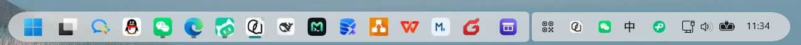

01
任务栏主题
把 Explorer 的任务栏换成胶囊或卡片，图标缩放、间距与悬停效果都能连续调；改完约 1 秒热重载，不用重启 Explorer。
查看细节功能 / 模块
平台只做平台该做的事：注入、看门狗、托盘、全局热键、统一设置中心。功能留在各自进程里，所以它们可以单独重启、单独关闭，也可以被下一个应用替换。
把 Explorer 的任务栏换成胶囊或卡片，图标缩放、间距与悬停效果都能连续调；改完约 1 秒热重载，不用重启 Explorer。
查看细节桌面仍由 Explorer 原生管理。收纳 = 把文件物理移进独立收纳库，分类只是库内的虚拟元数据；拖回桌面即恢复，文件不会被删除。
查看细节默认不常驻、不预建索引。按下 Alt+S 才拉起进程，在后台建立名称索引，结果边建边出；关掉窗口即释放。
查看细节屏幕顶部的常驻胶囊：时间、性能、任务、剪贴板、消息与动态。到点提醒只闪一下，打开面板的时机留给你。
查看细节Alt+J 冻结整屏：框选后画矢量标注、滚动拼接长截图，Enter 直接复制；空闲自动退出，不占常驻内存。
查看细节01TASKBAR
dcx_engine.dll 注入 explorer.exe，把主题规则写进任务栏 XAML。设置由宿主写进 settings.toml，引擎每秒轮询、按修改时间重建规则——没有「保存」按钮，也不需要重启 Explorer。
示意图：只演示 DCX 暴露的形状、缩放、间距与悬停参数，不是系统任务栏截图。

实机 · 胶囊 dock 与托盘 1294 × 74 裁切
02DESKTOP BOX
桌面上的文件仍由 Explorer 原生显示。把文件收进盒子时，它会被物理移动到收纳库（默认 文档\dcx收纳），桌面图标随之消失，文件本身不会删除；拖回桌面即恢复原状。
organizer.toml 的 overrides。
收纳盒 · 应用网格视图 Alt+D 唤出
03SEARCH
独立进程 dcx-search.exe，默认关闭：不随平台自启、不常驻、不预建索引。第一次按 Alt + S 才拉起，索引在后台线程建立，结果边建边出；关掉窗口进程就退出。
* ? 通配符、空格表示 AND、ext: / path: / regex: 前缀。
文件检索 · 名称 / 内容双模式 此电脑 · 7 类快捷过滤
04ISLAND
独立进程 dcx-island.exe，默认关闭。开启后屏幕顶部居中显示常驻胶囊，不占任务栏槽位；点它或按 Alt + I 展开成同一张卡的面板——胶囊那一行就是面板的标题栏。
127.0.0.1 + Bearer 令牌，脚本可把卡片推到「动态」页。
信息岛 · 性能页展开 顶部居中 · 不占任务栏槽位
05SNIP
独立进程 dcx-snip.exe，默认不常驻：Alt + J 由宿主按需拉起，冻结整屏后框选标注，Enter 直接复制，空闲自动退出。

截图与标注 · 两行工具条 Alt+J 唤出 · 10 色色板
架构 / PROCESS
宿主、引擎与应用之间没有共享内存、没有私有管道，只有 %LOCALAPPDATA%\dcx\ 下的 TOML / JSON。任何一方崩了，其它进程都能靠文件状态重新对齐。桌面快照与文件检索同为宿主按需拉起的独立进程，下图以检索代表这一类。
dcx-host.exe 同目录
宿主负责注入与看门狗，收纳盒、检索、信息岛与桌面快照都是独立 exe。一个应用崩溃不会影响任务栏主题和设置中心。
六个 TOML 与两个 JSON 都遵循同一套写入规则：按全路径派生的命名互斥体保护「读—改—写」，再原子替换。
新增独立应用 = 新增 crate + 在 apps.rs 注册一条 AppEntry，不需要改设置窗口的导航结构。
下载 / INSTALL
便携包，解压即用。可从官网直链或 GitHub Releases 下载；配置与索引全部写在 %LOCALAPPDATA%\dcx\，不写系统目录。
dcx-box.exe、dcx-search.exe、dcx-island.exe、dcx-snip.exe、dcx_engine.dll 与 wh_injector.exe。start-dcx.bat：只留托盘，不弹设置窗口；或运行 dcx-host.exe，默认带设置窗口启动。%LOCALAPPDATA%\dcx\。如果下载的是 DCX-v0.1.3-win64.zip，可用 Get-FileHash .\DCX-v0.1.3-win64.zip -Algorithm SHA256 与 SHA256SUMS.txt 对照。
边界 / LIMITS
把边界写在前面，比事后解释便宜。以下都是当前版本的已知限制，不是待办清单。
引擎针对当前 Windows 11 任务栏 XAML 实现，系统大版本更新后可能需要重新核对元素路径。
不要对 dcx_engine.dll 调用 FreeLibrary。唯一受支持的卸载方式是重启 Explorer——「恢复任务栏」做的就是这件事。
多任务栏与第三方任务栏壳未适配；任务栏图标放大受 dock 高度裁剪，属于当前实现的视觉边界。
SmartScreen / 杀毒软件可能提示；请只从本官网的下载页或本仓库的 Releases 下载，并用 SHA256SUMS.txt 校验。
DCX 是便携应用：换目录直接搬，卸载即删除目录；配置与索引留在 %LOCALAPPDATA%\dcx\。
QQ / 微信个人号没有官方出站接口。信息岛只做入站聚合；出站仅支持企业微信群机器人与 SMTP。